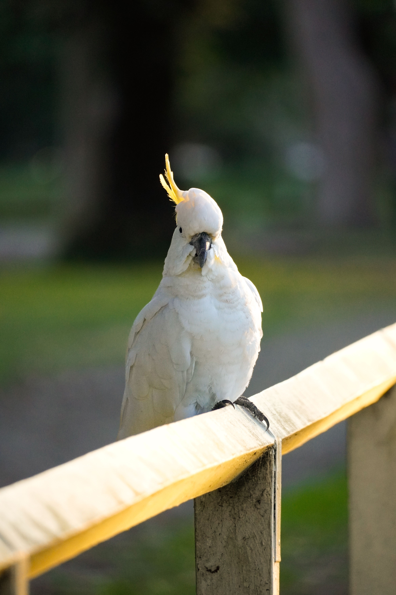

The Sulphur-crested Cockatoo is a large white cockatoo with a striking yellow crest and a powerful dark bill. When alarmed or excited, it raises the yellow crest into a dramatic fan. It is highly intelligent, social and adaptable, and can be found in forests, woodland, farmland and urban environments. Large flocks may gather in trees or feed on the ground, where they search for seeds, roots, fruits and other plant material. Its loud calls can carry over considerable distances, making the species much easier to hear than to overlook. It is also one of Australia's most familiar urban birds, particularly in eastern Australia.